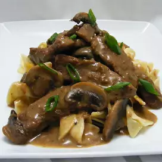

Beef Stroganoff

I have been making this recipe for over 20 years. This can be served over
either rice or noodles. A little work but worth the effort.
Ingredients
- 2 pounds beef chuck roast
- 1/2 teaspoon salt
- 1/2 teaspoon ground black pepper
- 4 ounces butter
- 4 green onions, sliced (white parts only)
- 4 tablespoons all-purpose flour
- 1 (10.5 ounce) can condensed beef broth
- 1 teaspoon prepared mustard
- 1 (6 ounce) can sliced mushrooms, drained
- 1/3 cup sour cream
- 1/3 cup white wine
- salt to taste
- ground black pepper to taste
Steps
-
Remove any fat and gristle from the roast and cut into strips 1/2 inch
thick by 2 inches long. Season with 1/2 teaspoon of both salt and
pepper.
-
In a large skillet over medium heat, melt the butter and brown the beef
strips quickly, then push the beef strips off to one side. Add the
onions and cook slowly for 3 to 5 minutes, then push to the side with
the beef strips.
-
Stir the flour into the juices on the empty side of the pan. Pour in
beef broth and bring to a boil, stirring constantly. Lower the heat and
stir in mustard. Cover and simmer for 1 hour or until the meat is
tender.
Five minutes before serving, stir in the mushrooms, sour cream, and white
wine. Heat briefly then salt and pepper to taste.
Beef Stroganoff

This rich and creamy ground beef stroganoff with egg noodles is super
simple to prepare, and ready to serve in under 30 minutes making it a
great choice for busy weeknights. Garnish with freshly chopped parsley for
added color and flavor.
Ingredients
- 1 (8 ounce) package egg noodles
- 1 pound ground beef
- 1 (10.5 ounce) can fat-free condensed cream of mushroom soup
- 1 tablespoon garlic powder
- 1/2 cup sour cream
- salt and ground black pepper to taste
Steps
-
Saute ground beef in a large skillet over medium heat until browned and
crumbly; 5 to 10 minutes.
-
At the same time, fill a large pot with lightly salted water and bring
to a rapid boil. Cook egg noodles at a boil until tender yet firm to the
bite, 7 to 9 minutes. Drain and set aside.
-
Drain and discard any fat from the cooked beef. Stir condensed soup and
garlic powder into the beef. Simmer for 10 minutes, stirring
occasionally.
-
Remove beef from the heat. Add egg noodles and stir to combine. Stir in
sour cream and season with salt and pepper.
Simple beef simple-beef-stroganoff